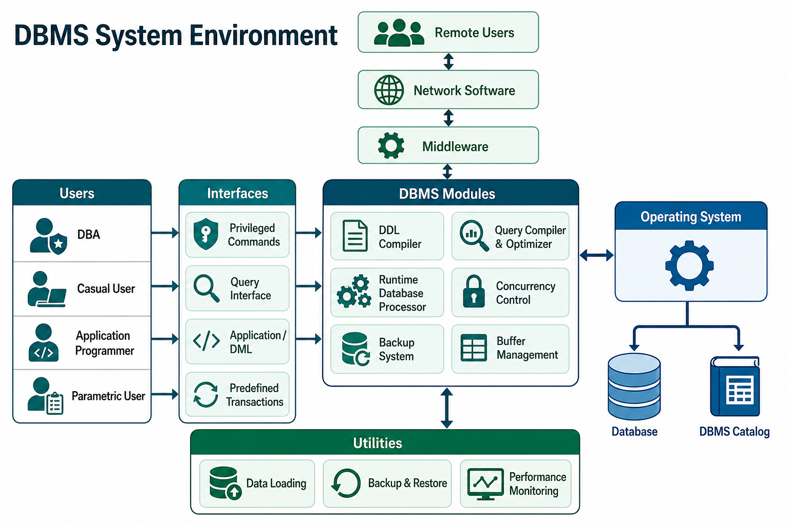

Excellent! This chapter looks scary because of the big diagram, but for IBPS SO IT, you don't need to memorize every arrow. You need to understand:
- Who are the users?
- What does each DBMS component do?
- How does a query travel inside the DBMS?
Once you understand this flow, the diagram becomes very easy.
DBMS System Environment
What is a DBMS Environment?
Think of a Restaurant.
A restaurant is not just the kitchen.
It also has:
- Customers
- Waiters
- Chef
- Cash Counter
- Store Room
- Manager
Together, they make the restaurant work.
Similarly,
A DBMS Environment is not just the database.
It includes
- Database
- DBMS Software
- Users
- Operating System
- Utilities
- Development Tools
- Network
All these work together.
Definition
A DBMS Environment consists of all the components, users, software, and utilities that help manage a database efficiently.
Real-Life Example
Think about Amazon.
When you search for a product,
many components work together.
Customer
↓
Amazon Website
↓
Application Server
↓
Database
↓
Operating System
↓
Hard DiskThis entire setup is called the DBMS Environment.
Key Components of DBMS Environment
There are 4 important components.
1. Database
This is where the actual data is stored.
Book says
Database is the actual data storage (disk drives).
Example
Customer
Orders
Products
PaymentsAll stored inside the database.
Think of it as a warehouse.
2. DBMS Catalog (Data Dictionary)
⭐⭐⭐⭐⭐ Very Important
Book says
Contains Metadata.
What is Metadata?
Data about data.
Example
Instead of storing Rahul's data,
it stores
Table Name = Student
Column = Name
Datatype = VARCHAR
Primary Key = Roll NoThis information helps DBMS understand
- table structure
- column names
- constraints
- relationships
Easy Trick
Data Dictionary
↓
Dictionary of the Database.
It tells
"What exists inside the database."
3. Operating System (OS)
The DBMS doesn't directly talk to the hard disk.
Instead,
it asks the Operating System.
Example
DBMS
↓
Operating System
↓
Hard DiskThe OS performs
- Read
- Write
- Delete
- File Management
4. Buffer Management
⭐⭐⭐
Suppose
Customer searches
iPhoneShould DBMS read the Hard Disk every time?
That would be slow.
Instead,
frequently used data is kept in RAM (Buffer Memory).
User
↓
RAM (Buffer)
↓
Hard Disk (Only if needed)This makes searching much faster.
Example
Online Book Store
Without Buffer
Search Book
↓
Read Hard DiskAgain
Search Book
↓
Read Hard DiskSlow.
With Buffer
Search Book
↓
RAM
↓
Instant ResultUsers of DBMS
Different people use DBMS differently.
There are 4 important users.
1. Database Administrator (DBA)
Already studied earlier.
Responsible for
- Security
- Backup
- Recovery
- User Accounts
- Permissions
- Performance
In this chapter
DBA uses
- Privileged Commands
- DDL Statements
Example
Create Table
CREATE TABLE Student(...);Only DBA usually performs these operations.
2. Casual (Interactive) Users
These are normal users.
They occasionally search data.
Example
Marketing Manager
Searching
Customers from DelhiUses
Interactive Query
No programming.
Examples
- HR Manager
- Principal
- Sales Manager
3. Application Programmers
These are Software Developers.
They write programs in
- Java
- Python
- C#
Example
Shopping App
SELECT * FROM Product;inside Java Code.
They don't write SQL directly to the DBMS.
Programs go through
Precompiler
Compiler
DBMS
4. Parametric Users
⭐⭐⭐⭐
Frequently asked.
Who are they?
Users who perform
the same transaction
again and again.
Examples
- Bank Teller
- Railway Booking Clerk
- Cashier
- Data Entry Operator
Example
Bank Teller
Every customer
Deposit
Withdraw
Balance InquirySame predefined screens.
Same predefined transactions.
No SQL writing.

The Big Diagram (Simplified)
Let's understand the complete flow.
Step 1
Different users come.
DBA
Casual User
Programmer
Parametric UserStep 2
Each user uses a different interface.
DBA
↓
DDL StatementsCasual User
↓
Interactive Query
Programmer
↓
Application Program
Parametric User
↓
Forms / Transactions
Step 3
These are converted into machine-understandable form.
Different compilers do this.
Now let's study each one.
DDL Compiler
DDL means
Data Definition Language.
Examples
CREATE
ALTER
DROPSuppose DBA writes
CREATE TABLE Student;DDL Compiler converts it
into a format
DBMS understands.
Also,
updates
Data Dictionary.
Because
new table created.
Metadata changed.
Easy Trick
DDL Compiler
↓
Changes Structure.
Query Compiler
Suppose user writes
SELECT * FROM Student;Can DBMS execute SQL directly?
No.
First
Query Compiler
checks
- Syntax
- Errors
- Validity
Then converts it
to internal format.
Query Optimizer
⭐⭐⭐⭐⭐
IBPS Favorite.
Suppose
Database has
10 crore records.
Query
SELECT * FROM Student
WHERE Roll=100;Should DBMS
check
every row?
No.
Optimizer finds
the fastest method.
Maybe
use
Index.
Maybe
Binary Search.
Maybe
Hash.
Optimizer decides.
Easy Trick
Optimizer
↓
Fastest Path.
Precompiler
Application Programmer writes
String sql =
"SELECT * FROM Student";Java
*
SQL
are mixed.
Precompiler
extracts
SQL part.
Remaining Java
goes to Java Compiler.
SQL
goes to DML Compiler.
Think
Precompiler
↓
Separates SQL from Java.
Host Language Compiler
Host Language means
Programming Language.
Examples
Java
Python
C++
Compiler converts
Java code
into executable program.
DML Compiler
DML
=
Data Manipulation Language.
Commands
SELECT
INSERT
UPDATE
DELETEDML Compiler converts
these commands
into executable database operations.
Compiled Transactions
After compilation,
transactions become
ready to execute.
Example
Withdraw Money.
Now DBMS can execute it.
Runtime Database Processor
⭐⭐⭐⭐
This is the heart of DBMS execution.
Everything finally reaches here.
Responsibilities
- Execute Query
- Access Database
- Read Data
- Write Data
- Update Buffer
Think of it as
the Manager inside DBMS.
Data Dictionary
Already studied.
Stores
Metadata.
Whenever DBMS forgets
table structure,
it asks
Data Dictionary.
Example
User asks
SELECT Name
FROM Student;DBMS asks
Data Dictionary
Does Student table exist?
Does Name column exist?Stored Database
Simply
Actual Database.
Contains
real records.
Stored Data Manager
Responsible for
reading
writing
updating
disk.
Think of it as
Database File Manager.
Concurrency Control
⭐⭐⭐⭐⭐
Very Important.
Suppose
Two people
withdraw money
from same account.
Without control
Balance becomes wrong.
Concurrency Control
ensures
multiple users
don't corrupt data.
Example
Account
₹5000
Rahul withdraws ₹2000
Aman withdraws ₹3000
Both transactions happen correctly.
Query Execution Flow
Let's see what happens when you execute
SELECT * FROM Student;Step 1
User writes query.
↓
Step 2
Query Compiler
checks syntax.
↓
Step 3
Query Optimizer
finds fastest execution plan.
↓
Step 4
Runtime Database Processor
executes query.
↓
Step 5
Stored Data Manager
reads database.
↓
Step 6
Result returned to user.
Simple flow:
User
│
▼
Query Compiler
│
▼
Query Optimizer
│
▼
Runtime Database Processor
│
▼
Stored Data Manager
│
▼
Stored Database
│
▼
Result back to UserBackup System
Very important.
Suppose
Hard Disk crashes.
Backup
restores database.
Example
Yesterday
Backup taken.
Today
Disk crashes.
Restore
↓
Database recovered.
Performance Monitoring
DBA uses
performance tools
to check
- Slow Queries
- CPU Usage
- Memory Usage
- Index Performance
CASE Tools
CASE
=
Computer Aided Software Engineering.
Used for
Database Design.
Example
Creating
ER Diagram
automatically.
IDE
Integrated Development Environment.
Examples
- Eclipse
- IntelliJ IDEA
- Visual Studio
Used for
writing
testing
database applications.
Middleware
Middleware acts as a bridge.
Application
↓
Middleware
↓
DatabaseExample
A mobile app communicates with a remote database through middleware instead of connecting directly.
Network Software
Allows
Remote Users
to access
database.
Example
ATM
↓
Bank Database
connected through a network.
Summary of Major Components
| Component | Function |
|---|---|
| Database | Stores actual data |
| Data Dictionary (DBMS Catalog) | Stores metadata (data about data) |
| Operating System | Reads/writes data to disk |
| Buffer Manager | Keeps frequently used data in memory for faster access |
| DDL Compiler | Processes CREATE, ALTER, DROP and updates metadata |
| Query Compiler | Checks SQL syntax and converts queries into internal form |
| Query Optimizer | Chooses the fastest execution plan |
| Precompiler | Extracts SQL from host language programs |
| Host Language Compiler | Compiles Java/Python/C++ code |
| DML Compiler | Processes SELECT, INSERT, UPDATE, DELETE |
| Runtime Database Processor | Executes queries and transactions |
| Stored Data Manager | Reads/writes data from the database files |
| Concurrency Control | Prevents conflicts when multiple users access data simultaneously |
| Backup System | Protects and restores the database after failures |
| CASE Tools | Help design databases (ER diagrams, schemas) |
| IDE | Used to develop database applications |
| Middleware | Connects applications with the DBMS |
| Network Software | Enables remote database access |
⭐ IBPS SO IT Quick Revision
Users
| User | Uses |
|---|---|
| DBA | DDL Statements, Privileged Commands |
| Casual User | Interactive Queries |
| Application Programmer | Application Programs (Java, Python, etc.) |
| Parametric User | Predefined (Canned) Transactions |
Compilers
| Compiler | Purpose |
|---|---|
| DDL Compiler | Compiles schema definition commands |
| Query Compiler | Parses and validates SQL queries |
| Query Optimizer | Finds the most efficient execution plan |
| Precompiler | Separates embedded SQL from host language code |
| Host Language Compiler | Compiles the programming language |
| DML Compiler | Compiles data manipulation commands |
🎯 IBPS SO IT Frequently Asked Questions
- What is stored in the DBMS Catalog (Data Dictionary)?
✅ Metadata (schema, tables, data types, constraints).
- Which component chooses the fastest way to execute a query?
✅ Query Optimizer.
- Which component processes DDL commands like
CREATEandALTER?
✅ DDL Compiler.
- Who uses predefined (canned) transactions?
✅ Parametric Users.
- Who manages security, users, backup, and recovery?
✅ Database Administrator (DBA).
- What is the role of the Runtime Database Processor?
✅ It executes queries/transactions and coordinates access to the database.
- Why is Buffer Management used?
✅ To reduce disk I/O and improve performance by keeping frequently accessed data in memory.
The diagram may look complicated, but for IBPS, remember it as a simple pipeline:
Users → Compiler → Optimizer → Runtime Processor → Stored Data Manager → Database → Result.
Everything else supports or improves this process.